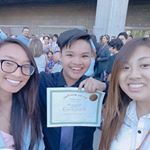

I was born April 3rd, 2004 in San Jose California. I went to Terrell Elementary School, John Muir Middle School, and am currently going to Gunderson High school. I like to listen to music and watch Netflix or youtube in my spare time. I play Badminton and am planning on doing Water Polo next year.
I am a Vietnamese American, and a quarter chinese. I am 5'3, 15 years old, and have dark brown eyes. I go to a summer program at Stanford called SMASH where I live on campus and take classes. I really like it because I get to chill with a lot of people that I normally wouldn't get to, and they are also all extremely friendly and kind!
